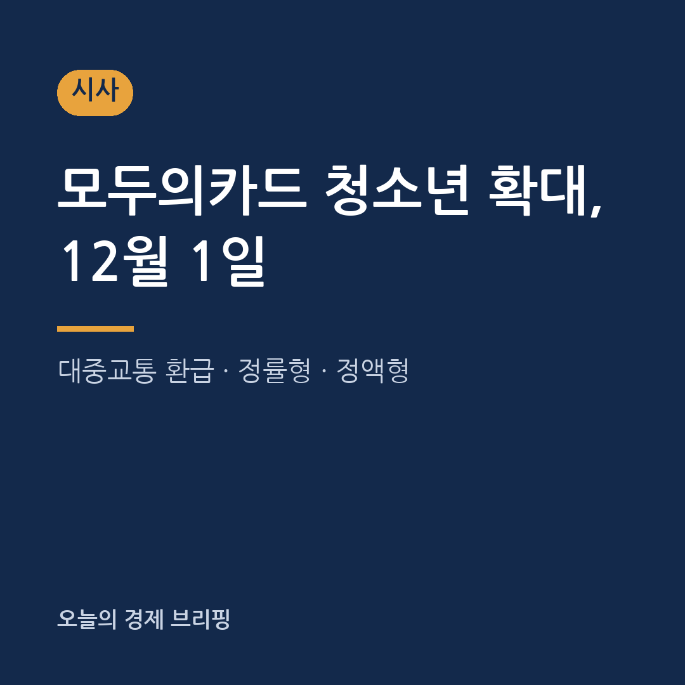
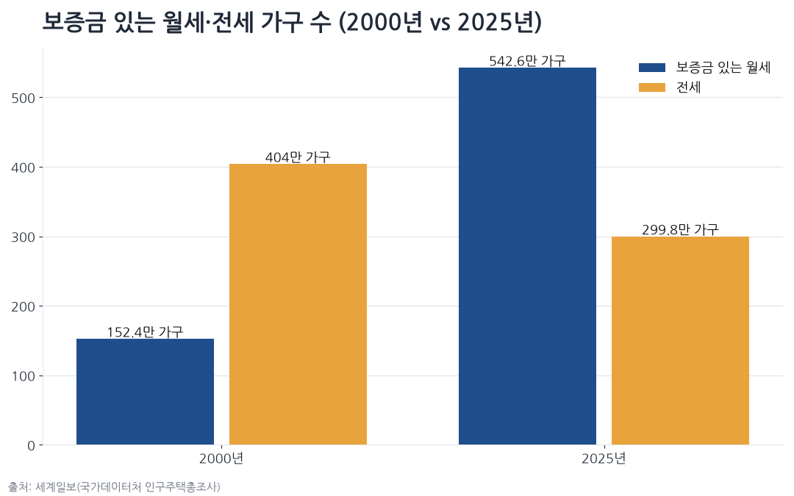

2026-11-25-1139-tistory 발행 키트 · 이 페이지는 검색에 노출되지 않습니다.
제목
카테고리
시사태그
본문 (그림·표 포함)
휴대폰 블로그 앱에서는 그림이 같이 붙지 않을 수 있어요. 그때는 [글자만 복사] 후 아래 이미지를 저장해 [그래프1]·[표1] 자리에 첨부하세요.

핵심 결론부터 정리합니다. 대중교통비를 환급해 주는 모두의카드를 다음 달 1일부터 만 13~18세 청소년도 쓸 수 있습니다. 광역교통 정책을 맡은 국토교통부 산하 대도시권광역교통위원회가 25일 이 방침을 공개했습니다. 수도권 일반형 기준으로 정률형은 대중교통비의 20%를, 정액형은 6만 2천 원을 넘는 지출분을 돌려받습니다.
같은 날 보도된 국가데이터처의 2025 인구주택총조사 표본조사에서는 보증금 있는 월세 가구가 사상 처음 540만 가구를 넘은 것으로 나타났습니다. 교통비와 주거비 모두 가계 고정지출 문제라는 점에서 함께 살펴봅니다.
▶ 배경: 모두의카드란
모두의카드는 한 달 대중교통 이용액을 기준으로 일정 금액을 돌려주는 환급형 교통 카드입니다. 지금까지는 청소년이 대상에서 빠져 있었고, 이번 조치로 이용 연령이 아래로 확대됩니다.
▶ 핵심 내용: 환급 방식 두 가지
환급은 정률형과 정액형으로 나뉩니다. 정률형은 쓴 금액의 일정 비율을 돌려주고, 정액형은 환급 기준금액을 넘어선 지출액을 돌려주는 방식입니다.
청소년 모두의카드 이용 정리
| 항목 | 내용 |
|---|---|
| 대상 | 만 13~18세 청소년 |
| 시작일 | 12월 1일 |
| 정률형(수도권 일반형) | 대중교통비의 20% 환급 |
| 정액형(수도권 일반형) | 6만 2천 원 초과분 환급 |
| 이용 절차 | 카드 발급 후 앱·누리집에서 회원가입과 카드 등록 |
출처: 세계일보
▶ 카드 발급처와 이용 절차
만 13~18세 대상 카드는 농협, 신한, 우리, 이즐, 코레일, 토스, 티머니, 하나, IBK기업, KB국민에서 발급합니다. 카카오뱅크와 케이뱅크 카드는 18세부터 가능합니다.
카드를 발급받은 뒤에는 앱이나 누리집에서 회원가입과 카드 등록을 해야 환급 대상이 됩니다. 발급만으로는 끝나지 않는다는 점이 중요합니다.
내년 2월에는 카카오뱅크(청소년), 한패스(국내 거주 외국인), KB국민카드(청년층) 전용 상품이 추가됩니다.
▶ 영향: 가계 입장에서 보면
통학 거리가 먼 가구일수록 한 달 교통비가 기준금액을 넘길 가능성이 높아, 정액형 환급 효과를 볼 여지가 큽니다. 이용액이 적거나 들쭉날쭉한 가구는 비율 방식이 단순할 수 있습니다.
다만 어느 쪽이 유리한지는 가구별 이용 패턴에 따라 다르므로, 최근 몇 달의 교통카드 이용 내역을 먼저 확인해야 합니다.
▶ 함께 볼 숫자: 임차 가구 구조 변화
국가데이터처 조사에서 보증금 있는 월세 가구는 542만 6천 가구로 전체의 24.1%였습니다. 전세는 299만 8천 가구, 13.3%로 월세가 전세의 1.81배입니다.
2000년에는 전세가 28.2%(404만 가구), 보증금 있는 월세가 10.7%(152만 4천 가구)로 전세가 월세의 2.6배였습니다. 25년 사이 순서가 뒤집힌 셈입니다.

임차 가구 주요 수치 (2025 인구주택총조사 표본조사)
| 구분 | 수치 |
|---|---|
| 보증금 있는 월세 | 542만 6천 가구 (24.1%) |
| 전세 | 299만 8천 가구 (13.3%) |
| 서울 월세 비중 | 33.7% (141만 4천 가구) |
| 보증금 있는 월세 1년 미만 거주 | 30.8% |
출처: 세계일보(국가데이터처)
서울은 전체 가구의 33.7%, 141만 4천 가구가 월세로 거주합니다. 보증금 있는 월세 가구의 30.8%는 거주 기간이 1년 미만이어서, 전세의 21.1%, 자가의 8.1%보다 이동이 잦았습니다.
▶ 확인할 점
첫째, 청소년 카드는 12월 1일부터 쓸 수 있으나 발급사별로 대상 연령이 다릅니다. 둘째, 카드 등록을 마쳐야 환급이 적용됩니다. 셋째, 정률형과 정액형 중 우리 가구에 맞는 방식을 이용 내역으로 비교해야 합니다.
▶ 정리
1. 12월 1일부터 만 13~18세 청소년도 모두의카드를 이용할 수 있습니다.
2. 수도권 일반형은 정률형 20% 환급 또는 정액형 6만 2천 원 초과분 환급입니다.
3. 월세 가구가 전세 가구의 1.81배가 된 만큼, 교통비 같은 고정지출 점검의 필요성이 커졌습니다.
이 글은 공개된 뉴스와 공공자료를 바탕으로 정리한 정보 제공용 글이며, 투자 권유가 아닙니다.
이미지 (개별 복사·저장)
출처 (본문 맨 아래에 붙여넣기 권장)
- 세계일보, 청소년도 ‘모두의카드’ 이용 가능… 교통비 20% 환급, https://www.segye.com/newsView/20261125507329 - 세계일보, “전세 살이보다 월세 살이가 훨씬 많다”··· 서울은 3집 중 1집이 월세, https://www.segye.com/newsView/20261125507611